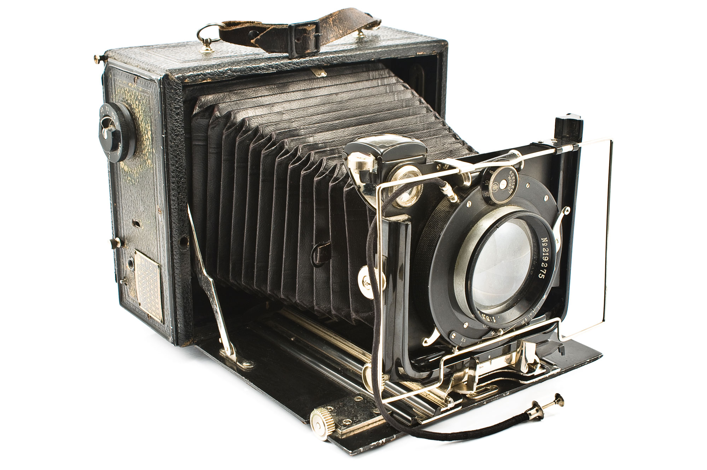

IMPACT OF CAMERAS
Cameras have had a significant impact on people's lives since their invention. They allow us to capture and preserve memories in a visual format, making it easier to share important events and milestones with family and friends. Cameras have also revolutionized the way we communicate and share information, with social media and messaging apps making it easy to share photos and videos with others around the world. They have also played a crucial role in documenting historical events and raising awareness about important issues. With the rise of digital cameras and smartphones, photography has become more accessible to everyone, allowing people to take high-quality photos and share them instantly with others. The popularity of the selfie has also changed the way people express themselves and connect with others. Overall, cameras have had a profound impact on our lives and will continue to shape our experiences in the future.